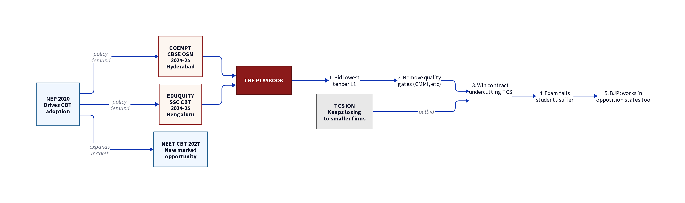

Why India's Exam System Keeps Getting Captured by Small Firms — And What It Means for You
| ← Coempt deep dive
TL;DR
Coempt (CBSE) and Eduquity (SSC) followed the same playbook: bid low after tender conditions were relaxed, win the contract, fail to deliver, get politically insulated.
TCS loses because government tenders prioritize price over quality, specs get rewritten to exclude them, and they have bigger businesses to run.
NEP 2020 and the NEET CBT transition (2027) are about to flood this broken market with even more demand — 30+ crore students dependent on the same opaque vendors.
Nobody in power has an incentive to fix this. Your best weapon is documentation, RTIs, and public pressure.
1. The Market: Your Marks, Their Business
~2 Cr
NTA exam candidates/year
18.5 L
CBSE Class 12 answer sheets
~50 L
SSC exam aspirants
30+
State boards needing tech
All of this needs technology: scanning, evaluation, mark processing, result compilation, CBT delivery, proctoring. The market is worth thousands of crores annually. And it's served by companies you've never heard of.
Company
HQ
What They Do
Scale
TCS iON
Mumbai
CBT delivery, digital marking
~₹1,000 Cr (est.)
Coempt EduTeck
Hyderabad
OSM, exam processing
₹68 Cr (FY25)
Eduquity
Bengaluru
CBT delivery, assessments
₹117 Cr (FY25)
MeritTrac
Bengaluru
Assessment & testing
~₹100 Cr (est.)
Pearson VUE
Global
CBT (JEE, CAT)
Global
Prometric
Global
CBT delivery
Global
Two of these — Coempt and Eduquity — have been at the centre of major scandals in the last 12 months. Both followed almost identical playbooks.

Fig 1. The playbook: how small firms keep capturing government exam contracts. Coempt (CBSE) and Eduquity (SSC) used the same pattern.
2. The SSC Scam: Déjà Vu
While you were dealing with the CBSE OSM mess, another scandal was unfolding at the Staff Selection Commission (SSC) — which conducts exams for government jobs millions prepare years for.
The Eduquity Story
In 2025, the SSC replaced TCS with Eduquity Career Technologies, a Bengaluru-based company that won by quoting lower. What happened next:
July 2025: SSC Phase-13 exam — server crashes, biometric failures, students turned away. Chaos across India.
Paper leak allegations: Repeated questions, alleged leaks in SSC GD 2026 exam.
Massive protests. Students took to the streets demanding Eduquity be removed.
YouTuber sued: Eduquity filed a ₹25 crore defamation case against YouTuber Nitish Rajput for exposing the scandal.
The Blacklist That Didn't Stick
Eduquity was blacklisted by the Directorate General of Training (DGT) in 2020 for exam-related irregularities. The DGT's own comparative statement lists Eduquity as "Ineligible."
Yet in 2025, Eduquity won the SSC contract anyway.
The Playbook
Step 1: The Big Firm Qualifies
TCS qualified in CBSE OSM round 1 and round 2. TCS had been running SSC exams smoothly before replacement.
Step 2: Tender Conditions Get Relaxed
CBSE dropped CMMI Level 5 certification, scanning resolution requirements. SSC weighted QCBS to favour lower financial bids over technical capability.
Step 3: The Small Firm Wins on Price
Coempt bid ₹24.75/answer sheet. Eduquity bid ~₹273 crore for the CBT cycle.
"Coempt works in opposition states too." "Eduquity's role was limited, rumours."
The Comparison
Parameter
CBSE / Coempt
SSC / Eduquity
Vendor HQ
Hyderabad
Bengaluru
Revenue
₹68 Cr (FY25)
₹117 Cr (FY25)
Previous scandal
2019 Telangana Intermediate disaster
Blacklisted by DGT in 2020
Tender manipulation
3 rounds, conditions relaxed
QCBS weighted to lowest bid
The big loser
TCS
TCS
Mode of failure
Scanning errors, blur, swap
Server crashes, biometric failures
Political defence
"Works in opposition states"
"Role limited, rumours"
Student impact
18.5 lakh students
~50 lakh aspirants
This is not coincidence. This is a pattern.
3. Why TCS Keeps Losing
India's largest IT company doesn't dominate government exam tech. Six reasons why:
A. The Price Race to the Bottom
Government tenders prioritize lowest price (L1). TCS, with ₹12 lakh+ crore market cap, cannot match cut-rate pricing of smaller firms. Coempt bid ₹24.75/answer sheet.
B. Specs Get Written to Exclude
Requirements that TCS meets (CMMI Level 5, 300+ DPI scanning) get relaxed after initial rounds. CBSE dropped CMMI Level 5 in round 3. That's moving the goalposts.
C. Small Firms Are More "Flexible"
Large companies have compliance teams that push back. Smaller firms work with looser arrangements. This isn't efficiency — it's the absence of accountability.
D. TCS Has Bigger Fish to Fry
Exam tech is noise compared to $7.5B quarterly revenue. Thin margins, political scrutiny, limited upside. They've been quietly scaling back.
E. No Quality Benchmarks in Tenders
Indian tenders do NOT require: independent security audits, penetration testing, demonstrated uptime, track record of similar-scale exams, or vendor financial health checks.
F. Cross-Party Protection
Vendors build relationships across parties. Neither side wants to investigate too deeply because both have fingerprints on the same vendors.
4. NEP 2020: The Coming Flood
Here's where it gets personal. The National Education Policy (NEP) 2020 is about to dramatically expand the role of exam-tech companies in your life.
What NEP 2020 Mandates
Section 4.4 mandates "competency-based assessment" — moving from rote memorization to testing understanding. In practice:
More digital assessments — competency-based testing is harder on paper
More frequent evaluations — continuous assessment, not just one final exam
PARAKH — new national assessment regulator setting standards for all 60+ school boards
More data collection — every assessment generates data that needs processing
The NEET Timebomb
On May 29, 2026 — two days before this article — the NTA told the Supreme Court that NEET-UG will move to computer-based test (CBT) mode from 2027. Over 24 lakh students took NEET in 2026. Moving them to CBT in one year is enormous.
Who will build that CBT infrastructure? The same companies that botched CBSE OSM and SSC CBT.
NEET 2027 could be the next CBSE OSM — at an even larger scale.
CBSE
~1.5 Cr board exam sheets
NTA
~2 Cr NEET, JEE, CUET, NET
SSC
~50 L CGL, CHSL, GD, MTS
30 Cr+
Students dependent on exam tech
5. The Reform Question
Immediate Fixes
1. Cancel contracts pending investigation. Both CBSE OSM and SSC CBT contracts should be independently audited before further exams.
2. Publish full tender documents. CBSE has not made OSM tender results public — including qualifying amounts and bid details.
3. Mandatory track record disclosure. Blacklists, cancelled contracts, exam failures must be disclosed in the tender itself.
Structural Reforms
4. Separate evaluation from delivery. The company scanning answer sheets should not evaluate them.
5. Mandatory cooling-off periods. Government advisory board members should not join exam-tech vendors within 3 years.
6. Independent security audits. Annual penetration testing, results published publicly.
7. Open-source alternatives. Build examination infrastructure in the open — so anyone can audit it.
8. Financial health checks. Vendors must demonstrate stability, minimum paid-up capital, audited financials.
What's Blocking Reform
No political party wants to investigate too deeply — they all use the same vendors
The bureaucracy benefits from opaque procurement
Vendors face no consequences — they blame "rumours" and sue critics
Students have no institutional power
6. What You Can Do
1. Document everything. If you spotted errors in your OSM evaluation, file a formal objection. Keep records. The Sarthak Sidhant blog — by a Class 12 student who analysed tender documents — forced national attention.
4. Support investigative journalism. The best coverage came from student bloggers and independent reporters. Amplify it.
5. Demand open-source exam infrastructure. Your marks should not depend on proprietary software owned by a company with 5 directors and a history of failures.
The scan errors and blurred marks on your answer sheets are symptoms. The disease is a system that allows opaque, under-qualified companies to become the nervous system of public examinations — with no consequences when they fail.
That the system permits this is the scandal. Your mangled marks are just the evidence.